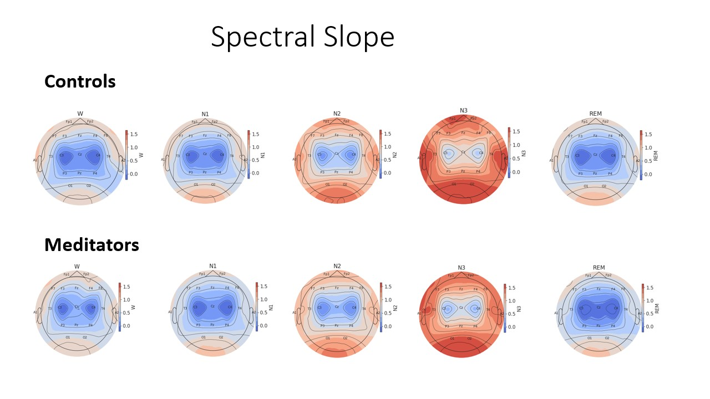

Results#
Spectral Slope
Average slope value increased through NREM sleep stages globally, reaching the highest in N3 sleep stage (indicating a steeper slope). REM sleep stage closely resembled Wake sleep stage, both presenting globally the lowest average slope values. Average spectral slope values were observed to be the lowest in the central recording regions (indicating shallower slopes). Globally, average slope values were observed to be relatively lower in meditators compared to controls.
{kind=link}
Fig. 1. Spectral Slope Dynamics: Topoplots represent exponent values (representing spectral slope) across sleep stages and EEG electrodes among meditators and controls.
{kind=link}
Fig. 2. Statistical Comparison: The topoplots depict the statistical comparison of aperiodic slope between meditators and controls in N2 and N3 sleep stage. The white dots represent the sensor locations which were found to be statistically significant.
Intercept
Intercept and Exponent were found to be positively correlated. Intercept values were found to be the lowest in wake sleep stage and the highest in N3 sleep stage. Intercept values were also observed to be the lowest in the central recording regions. Intercept values were observed to be relatively lower in meditators compared to controls.
{kind=link}
Fig. 3. Spectral Intercepts: Topoplots represent intercept values across sleep stages and EEG electrodes among meditators and controls.
Topography
Aperiodic parameters were noted to vary across brain regions. Average spectral slope values were observed to be the lowest in the central recording regions. Spectral intercepts were observed to be relatively higher in the anterior recording regions and lowest in the central recording regions.
{kind=link}
Fig. 4. Spectral Slope dynamics: Topographical representation of exponent values (representing spectral slopes) across sleep stages and EEG electrodes.